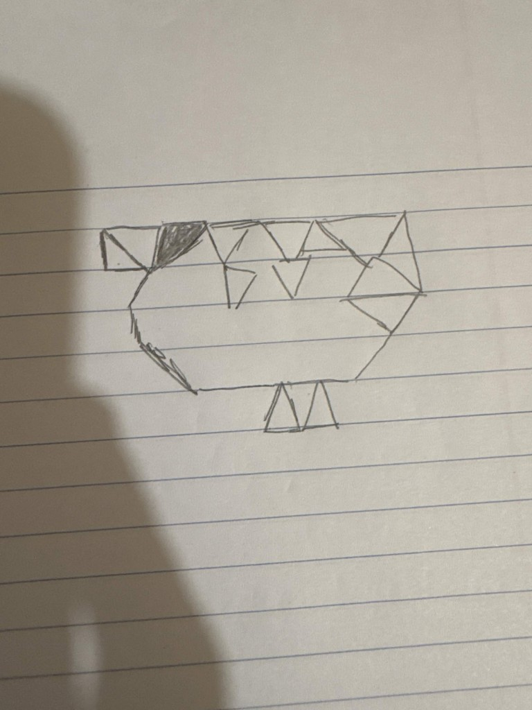

gl.blendFunc(SRC_ALPHA, ONE_MINUS_SRC_ALPHA)), so layered strokes look like
translucent paint. The canvas uses preserveDrawingBuffer: true for smoother
painting with many shapes. Clear only removes your brush strokes; the triangle picture stays
until you reload the page.
Reference drawing (graph paper, triangle bird). WebGL version matches this layout.
